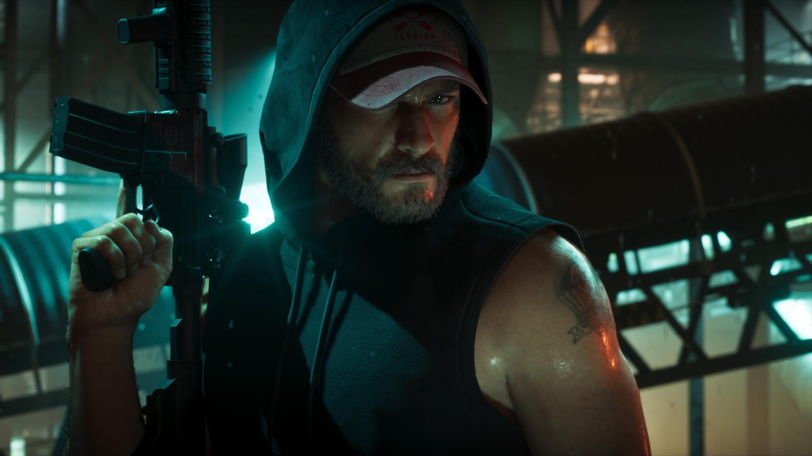
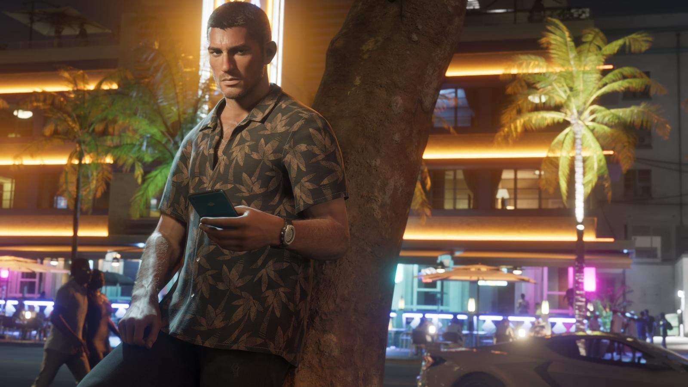

GTA 6 на ПК: когда выйдет
Опубликовано:

Коротко
- Официально GTA 6 выходит только на PS5 и Xbox Series X|S.
- Дату ПК-версии Rockstar не объявляла.
- GTA 5 вышла на ПК через 1,5 года после консолей, RDR 2 — через год.
- Системных требований пока нет.
Официальный статус
19 ноября 2026 года GTA 6 выходит на PlayStation 5 и Xbox Series X|S. О версии для ПК Rockstar официально ничего не объявляла. Как только появится дата — обновим эту статью.
Как было с прошлыми играми
| Игра | Консоли | ПК |
|---|---|---|
| GTA 5 | Сентябрь 2013 | Апрель 2015 |
| Red Dead Redemption 2 | Октябрь 2018 | Ноябрь 2019 |
Rockstar традиционно выпускает ПК-версии позже консольных. Но это прошлый опыт, а не обещание для GTA 6.

Системные требования
Официальных системных требований для ПК нет, потому что нет самой ПК-версии. Все таблицы требований, которые гуляют в интернете, — догадки.
Источники: Rockstar Games — официальный сайт GTA VI (rockstargames.com/VI), Rockstar Newswire, Rockstar Store.
Короткие ролики: GTA 6 и реальная жизнь
Каждый день — одно сравнение: кадр игры рядом с реальным фото. Подписывайтесь:
YouTubeInstagramTikTokЧитайте также